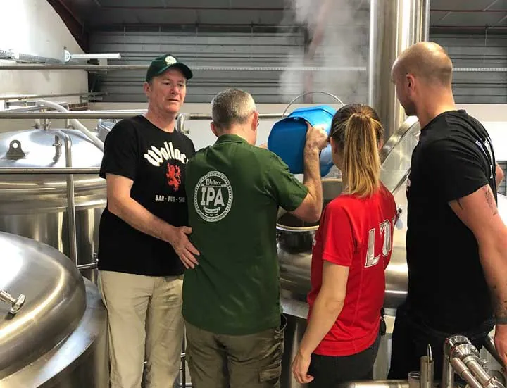
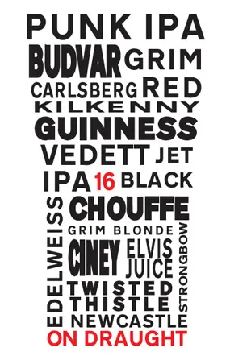
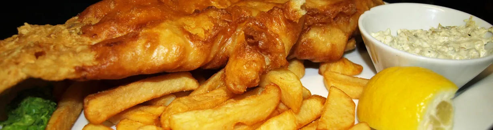
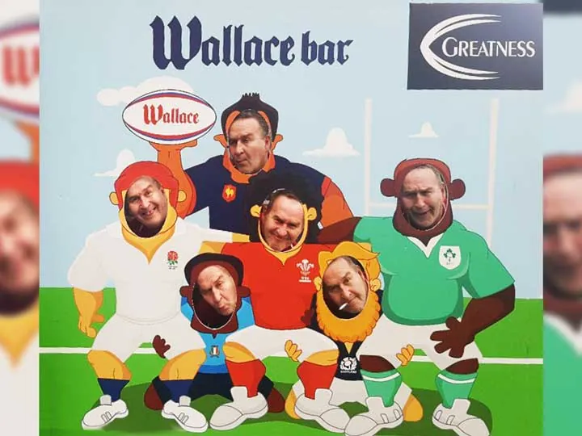
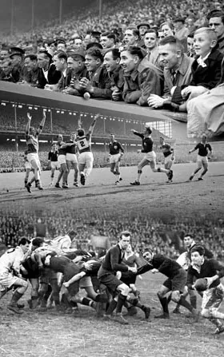
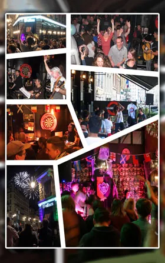
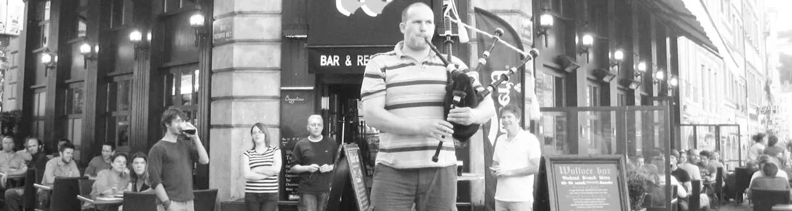
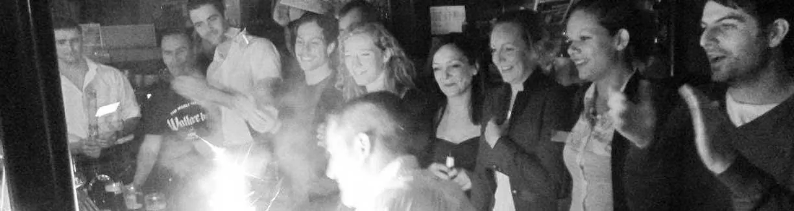
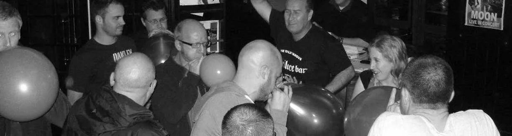

Pub du Vieux-Lyon, bord de Saône
Everyday pub
Fish & chips, burgers et bière brassée maison. Sport en direct sur 4 grands écrans.

Aujourd’hui
- Bar : 11h-00h30 du dimanche au jeudi, 11h-02h30 le vendredi et le samedi
- Cuisine : 12h-15h et 19h-22h du lundi au samedi, 11h-15h et 18h30-22h le dimanche
- Quiz le lundi à 20h30
- Plat du jour le midi, du lundi au vendredi
- Sport sur 4 écrans
Bière maison
Le Wallace brasse sa propre bière.
- Wallace IPA
- Double IPA
- Lager
- NEIPA




16 pressions
- Brewdog
- Guinness
- Galway Bay
- La Chouffe
- Lagunitas
Les autres pressions changent : demandez au comptoir.
- Bouteilles et canettes
- Sans alcool : Punk AF, Guinness 0.0
- Gins Fever-Tree, + 2 €
- Vins
Wee whisky list
- Écosse.
- Irlande.
- Monde.
Whisky Club
La carte des whiskies d’Écosse, d’Irlande et du monde se consulte sur place.
Demander la carteCuisine
Midi12h-15h, dimanche 11h-15hPlat du jour du lundi au vendredi
Soir19h-22h, dimanche 18h30-22h

Brunch british le week-end. La cuisine ouvre à 11h le dimanche.
04 72 00 23 91Allergènes : demandez au comptoir.
Sport
4grands écrans
Tous les grands sports en direct. Foot, rugby, darts.


Événements
-
Lundi 20h30
Quiz
« Le plus grand de Lyon », selon le bar. Verres gratuits.
Concerts
Des concerts réguliers, dont la Fête de la Musique.
Whisky Club
Wallace Craft Beer
Wallace on Tour
Le concours photo.




Dans la presse
Mondial féminin 2019 : la vidéo tournée au Wallace relayée dans le monde entier.
- Rolling StoneMondial féminin 2019
- USA TodayMondial féminin 2019
- Fox NewsMondial féminin 2019
- The GuardianMondial féminin 2019
Cité aussi par Le Progrès, ExitMag, Spot Web et Découvrir Auvergne-Rhône-Alpes. Un article a aussi été écrit sur le brunch british.
Horaires
| Jour | Bar | Cuisine |
|---|---|---|
| Lundi | 11h-00h30 | 12h-15h19h-22h |
| Mardi | 11h-00h30 | 12h-15h19h-22h |
| Mercredi | 11h-00h30 | 12h-15h19h-22h |
| Jeudi | 11h-00h30 | 12h-15h19h-22h |
| Vendredi | 11h-02h30 | 12h-15h19h-22h |
| Samedi | 11h-02h30 | 12h-15h19h-22h |
| Dimanche | 11h-00h30 | 11h-15h18h30-22h |